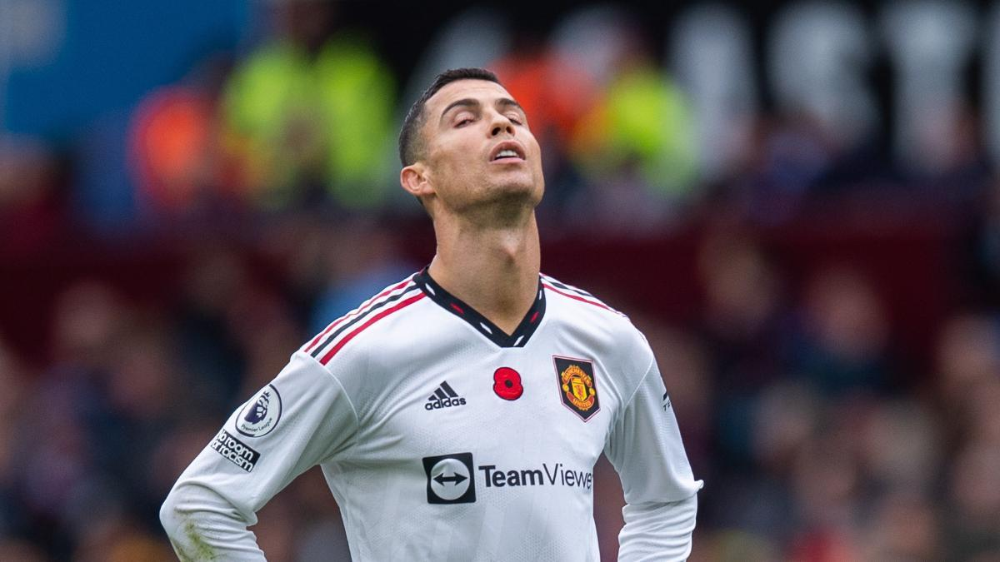

Reconocimientos de Cristiano Ronaldo

| inicio | biografia | logros | contacto |
Reconocimientos de Cristiano Ronaldo |
|||
|
|||
| Considerado uno de los mejores futbolistas del mundo y uno de los deportistas más mediáticos. Ronaldo fue distinguido con el premio al Mejor jugador de la Premier League en 2007 y 2008, así como Deportista portugués del Año. En la temporada 2007-08 se hizo acreedor de la Bota de Oro, el Balón de Oro, y el FIFA World Player en 2008. |  | ||
| El 11 de junio de 2009 el Manchester United aceptó la oferta de 93,9 millones de euros del Real Madrid C.F. El traspaso de Cristiano Ronaldo se confirma el 26 de junio y se convirtió en el traspaso más caro de la historia del fútbol. El 6 de julio fue presentado en el Estadio Santiago Bernabéu ante 80.000 personas. Debutó en el campo el 21 de julio con una victoria por 1-0 sobre el Shamrock Rovers. | |||
| Derechos reservados 2022 | |||